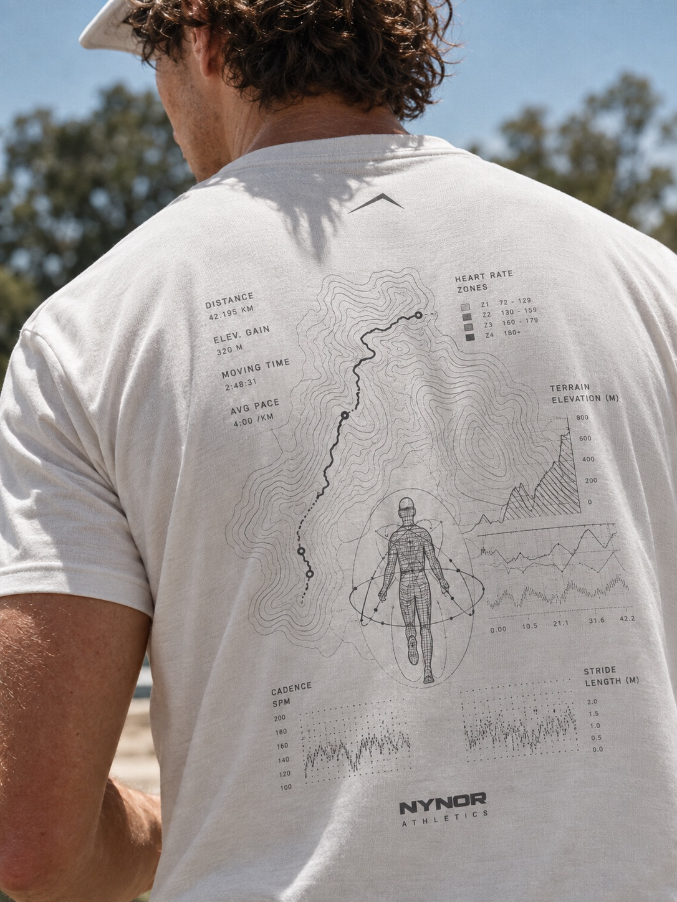
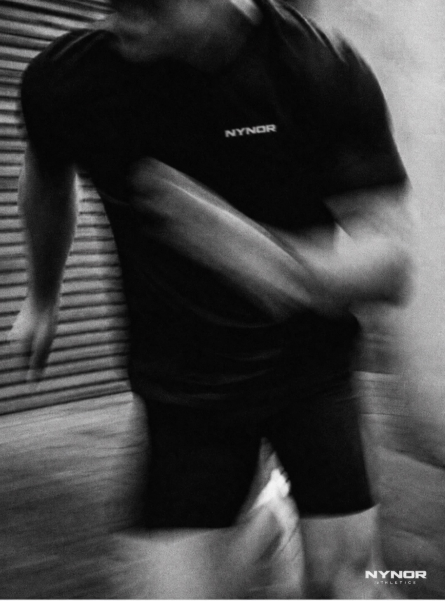

一个会员即可享受
多种先进模型会员待遇。
无需分别订阅多个平台，在同一个会员中使用多种先进模型能力。
从一张图片到一份研究，从一个想法到完整交付。
把任务交给 REIZO，让合适的能力一起完成。
将示例中的地址、密钥与模型名替换为控制台提供的信息。
无需分别订阅多个平台，在同一个会员中使用多种先进模型能力。
打开 REIZO 即可开始工作；以更友好的 Token 成本持续创作与探索。
说清需求，确认方向。
让合适的模型协同完成，交付图片、文档与代码。
品牌素材、研究文档、经营报表与网站，
让每项工作都有可用成果。
营收趋势 / 费用结构
渠道表现 / 跟进事项
明确修改范围与确认节点。
06 / 验收与付款补充验收期限与付款条件。

从一处细节，到一整套作品。

空间 · 光线 · 自然
点选画面细节，让新的方向自然融入。
手机确认，电脑继续。换个地方，工作不断。
远程操作需电脑在线、客户端运行。
 REIZO Agent
REIZO Agent工作台通过对话组织任务与成果，适合直接创作和处理工作。API 面向开发者，将模型能力接入自己的应用。两种方式使用同一套账户额度。
可以从 REIZO 自动模式开始，也可以在工作台中手动选择模型。首页展示的是交互示例，实际可用能力以工作台与模型目录为准。
企业服务有独立入口，提供围绕团队业务的方案沟通。了解企业服务 →